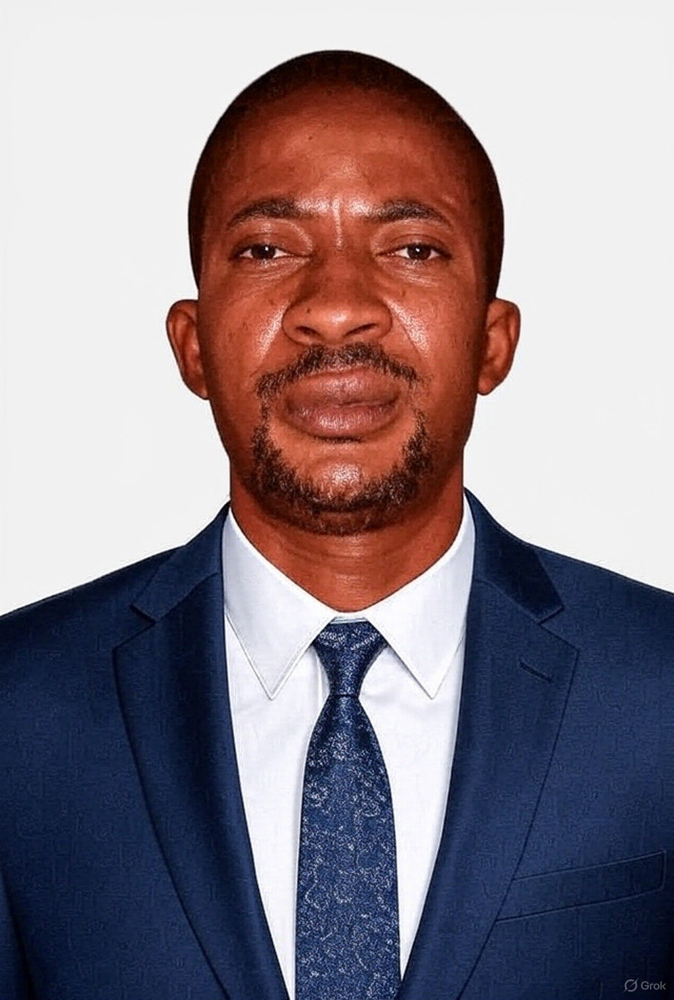

ANJORIN BABATUNDE MAYOWA

Objective Statement
Detail-oriented and motivated graduate with a degree in Accountancy and a comprehensive
understanding of web development as a Full Stack Developer.
Currently pursuing a degree in Information Management,
I aim to leverage my diverse skill set to enhance business operations
through innovative technology solutions. Seeking to contribute to a
dynamic organization that values analytical thinking and technical expertise,
while continuing to grow in the fields of finance, web development, and information systems.
Educational Background
- Leadcity University, Ibadan
Bsc Information Management (In View) 2026
- The Polytechnic, Ibadan
Higher National Diploma in Accountancy. 2013
- The Polytechnic, Ibadan
National Diploma in Accountancy. 2010
- Osogbo Grammar School, Osogbo
Senior School Certificate Examination. (SSCE) 2001
Working Experience
- Federation of Osun State Cooperative Limited. (FOOSCOOP)
Duties
- Conducting thorough examinations of the cooperative's financial records, including income statements, balance sheets, and cash flow statements, to ensure accuracy and compliance with accounting standards
- Verifying that the cooperative adheres to relevant laws, regulations, and internal policies. This may involve checking compliance with cooperative principles, tax laws, and industry standards.
- Evaluating the effectiveness of internal controls to safeguard assets, prevent fraud, and ensure reliable financial reporting. Providing recommendations for improving these controls when necessary.
- Compiling comprehensive audit reports that summarize findings, conclusions, and recommendations for the cooperative's management and board. Communicating results clearly to ensure understanding and action.
- Identifying and analyzing potential risks that could impact the cooperative's operations and financial health. Advising on risk mitigation strategies to enhance sustainability.
- Working closely with management to address audit findings, implement changes, and improve overall performance. This role often involves training staff on best practices.
- Educating cooperative members about financial literacy, governance, and the importance of compliance, fostering a culture of transparency and accountability.
- Ensuring that corrective actions are taken in response to audit findings by conducting follow-up audits or reviews to assess the implementation of recommendations
- Assisting in the evaluation of financial data and operational metrics to support strategic planning and decision-making processes within the cooperative.
-
Broadway Synergy Project Company Limited.
Duties
- Overseeing day-to-day operations on-site to ensure that activities align with project plans, specifications, and timelines.
- Leading and supervising project teams, including contractors, subcontractors, and employees. This involves delegating tasks, providing direction, and fostering a collaborative working environment.
- Ensuring the availability and efficient use of resources, including labor, materials, and equipment, to achieve project goals. This includes forecasting resource needs and coordinating procurement.
- Implementing and enforcing quality control measures to ensure that work meets contractual requirements and industry standards. Conducting inspections and addressing any quality issues that arise.
- Monitoring project budgets, tracking expenses, and ensuring that costs remain within limits. Identifying opportunities for cost savings without compromising quality or safety.
- Serving as the main point of contact between the project site and upper management, stakeholders, and clients. Providing regular updates on project progress, challenges, and changes.
- Developing and managing project schedules to ensure timely completion of tasks. Coordinating with various teams to align their efforts and meet deadlines.
- Maintaining accurate records of project progress, changes, and expenditures. Preparing reports for upper management and stakeholders to keep them informed about project status.
- Building and maintaining positive relationships with stakeholders, including clients, vendors, and regulatory agencies, to facilitate collaboration and support.
- Supporting the professional development of team members by providing training, mentorship, and opportunities for skill enhancement.
-
Old Mutual Nigeria Limited (Ecobank)
Duties
- Conducting thorough risk assessments to identify potential risks across various departments and projects. This includes analyzing internal policies, processes, and external factors that may affect the company.
- Developing and implementing strategies to mitigate identified risks. This involves creating action plans and controls to minimize the likelihood and impact of adverse events.
- Ensuring that the organization complies with relevant regulations, laws, and internal policies. The Risk Field Manager may conduct audits and monitor compliance to maintain industry standards.
- Assisting in the creation and implementation of risk management policies and procedures. This includes establishing protocols for risk reporting and response mechanisms.
- Providing training and resources to employees about risk management practices, policies, and procedures. Promoting a culture of risk awareness throughout the organization.
- Working closely with other departments (e.g., finance, operations, legal) to ensure a holistic approach to risk management. Collaborating with senior management to align risk strategies with business objectives.
- Leading investigations into risk-related incidents and developing reports outlining findings, impacts, and recommendations for improvement. Implementing corrective actions to prevent recurrence.
- Preparing regular reports for senior management and stakeholders on risk exposure, incidents, and the effectiveness of risk management strategies. Communicating potential risks and proposed solutions clearly.
- Continuously monitoring the effectiveness of risk management practices and making adjustments as necessary. Conducting periodic reviews and updates to risk management plans based on new information or changes in the business environment.
Skills
- Technical Skills
- Proficient in Full Stack Development (HTML, CSS, JavaScript, React, Node.js, etc.)
- Experience with database management (SQL, MongoDB)
- Familiarity with version control systems (Git/GitHub)
- Understanding of responsive design and user experience (UX) principles
- Financial Acumen and Analytical Thinking
- Strong knowledge of accounting principles and financial reporting
- Experience with financial analysis and budgeting
- Skilled in data analysis and problem-solving
- Experience in developing innovative solutions to improve business operations
- Ability to interpret financial data and support decision-making processes
- Ability to analyze complex information and identify trends and insights
-
Project Management Skills
- Ability to manage multiple projects and prioritize tasks effectively
- Experience working in Agile development environments
- Strong organizational and time management skills
-
Communication and Information Systems Knowledge
- Excellent verbal and written communication abilities
- Experience collaborating with cross-functional teams and stakeholders
- Understanding of information management principles and practices
- Familiarity with data management and information governance
- Capable of conveying complex technical concepts to non-technical audiences
- Knowledge of current technologies and best practices in IT
-
Customer-Focused Mindset and Continuous Learning
- Commitment to professional development and staying updated with industry trends
- Ability to understand user needs and create solutions that enhance user satisfaction
- Eagerness to learn new technologies and methodologies in finance and development
- Experience in gathering requirements and translating them into technical specifications
Contact Me
About Me